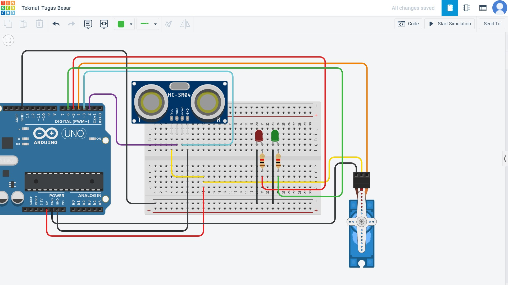

Motor servo bekerja berdasarkan mekanisme close loop control, dimana terdapat umpan balik (informasi) berupa posisi poros dan kecepatan yang diberikan kembali ke kontrol internal motor servo, walaupun umumnya hanya ada umpan balik posisi.

Cara Merangkai
1. Pin Ground dihubungkan ke pin GND, atau dapat dihubungkan ke pin negatif pada breadboard kemudian dihubungkan ke GND
2. Pin Power duhubngkan ke pin 5V, atau dapat dihubungkan ke pin positif pada breadboard kemudian dihubungkan ke 5V
3. Pin Signal dihubungkan ke pin biasa